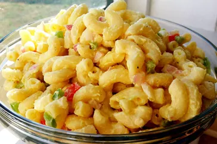

Classic Macaroni Salad

Description
This macaroni salad always gets lots of compliments. It's an easy recipe to make
and has a pleasing taste that everyone seems to love.
Ingredients
-
Macaroni: Of course, you'll need macaroni noodles.
-
Condiments: A creamy blend of mayonnaise and yellow mustard
adds tons of flavor.
-
Sugar and vinegar: White sugar adds a dose of sweetness, which is
pleasantly balanced by white vinegar.
-
Seasonings: This macaroni salad is simply seasoned with salt and ground
black pepper.
-
Vegetables: You'll need celery, an onion, and a bell pepper. Grated carrots
and pimento peppers are optional, but they add welcome flavor and color.
Steps
-
Cook the macaroni in salted water.
-
Mix the mayonnaise, sugar, vinegar, mustard, and seasonings together.
-
Stir in the macaroni and remaining ingredients. Chill in the refrigerator